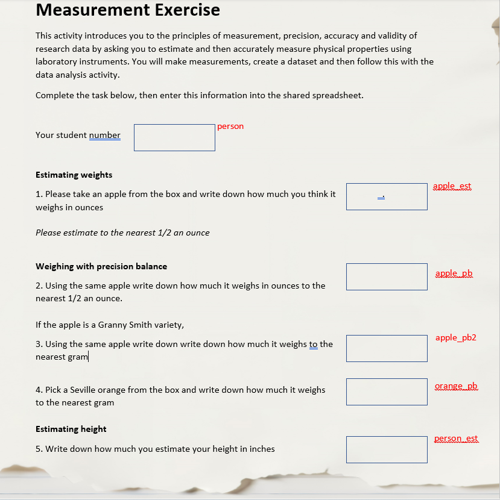

Unit 1.2 Why metadata matters
Overview
Unit study time 25 minutes
Intended Learning Outcome By the end of the unit, you will be able to...
- Explain the value of metadata creation for research impact, reproducibility, and user needs
Why create metadata recap
You're a researcher about to conduct a study, why might you want to create metadata for your research project?
Benefits of creating for you research project... - Increases the visibility of your study to other researchers and organisations - Helps others find, understand, compare, and use your data - Exploits the full potential of your data by supporting cross-study comparisons and secondary research - Preserves your data and research - Makes data management processes more robust and efficient - Enables more accurate, reliable and higher-quality research - Helps your future self understand and reuse the data
It may be required by ...
- Institutes in your working contract or project agreements
- Funding agencies may require metadata to ensure reusability of the data and that a project is meeting FAIR requirements
- Journals may specify metadata as a condition for publishing
- Supervisors may require metadaata in order to encourage data citations and enchance researcher reputation
- By certain projects that include collaborations across agencies and/or organisations
For more information about the benefits of metadata creation, explore unit 2.1 in the 'Introduction to Metadata' training course.
Many of the reasons above have been demonstrated in the 'Introduction to Metadata' training course. This course will look in more detail at how creating metadata could; - help your future self (and others) understand and reuse the data (NB: need to demonstrate this in this section (or wider in the foundation), - exploit the full potential of your data by supporting cross-study comparisons and secondary research, - make data management processes more robust and efficient, - enable more accurate, reliable and higher-quality research.
In the 'Introduction to Metadata' training course, we examined a dataset and listed some questions you might consider when determining if the data would be useful for your research. The series of who/what/where/when/how/why of the dataset providing the information we might need. In this training course we will look at the speicifc elements we could use to create this metadata in a strcutred and linked way.
Before we learn how to create metadata, we need to understand why metadata creation is so valuable in practice. This unit uses a simple example to uncover the kinds of questions metadata answers, and to show why metadata matters for research.
Fictional example
To start, we will look through a hypothetical example dataset and questionnaire which could have been implemented as part of a student project to think about how you make decisions about what data is appropraite to use for your research and how we can document this for yourself, others and computers to use. Don't worry too much about the detials here, but think about how metadata can make your work and others work easier. Later units will go into more detail about the metadata elements you see emerging here.
Questionnaire and data
[!NOTE] HM/JJ Add dataset level metadata. Universe should be at the study level? No time and place bound so can compare across different populations. JJ Perhaps there needs to be something about the importance of metadata at the column level such as missing values is a mirror of the universe, so if there are not accurate missing values e,g, "n/a" vs "just missing" then you don't know the universe for which the measure if capturing. How do we say that simply? HM If we are keeping variable level metadata here, then an sub-universe for the condition? would this be too complicated here as part of the intro - or should we explore further in the universe section?
Look at the example questionnaire and corresponding dataset below.

person | apple_est | apple_pb | apple_pb2 |orange_pb | person_est
|------------|-------|-------|--------|-----------|-------
1 | 6.5 | 170 | 165 | |140
2 | 7 | 200 | |250 | 180
3 | 18 | 250 | 270 | | 370
4 | 5 | 125 | |190| 100
5 | 6| 115 | 140 || 275
6 | 5 | 180 | 170 |190 | 300
Exercise
Imagine this is an exercise given to students so they can practice using a balance, whilst introducing the ideas of systematic data recording, measurement unit selection, accuarcy and precision.
Suppose you are the student who is asked to complete this task and are now about to start the data analysis. Since you were not involved in the design of the survey, you do not know what the intention of the data collection was, so you must think about what the data might be able to tell you, and what research question you want to answer.
Think about the following questions:
- What questions could you ask from the data?
- What variables might you want to compare or not compare?
- How did you make these decisions?
- Is there any additional information which would help you with these decisions?
Now what if you wanted to compare these with other datasets you have? Imagine for example, this actvity had been completed in the same way for the past 10 years with different students? Or the same activity was completed by students at a differenet university or with pupils at a nearby school. This will likely give rise to other research questions, and potentially more information you would need to make decisions about what is possible to analyse.
Possible answers: 1. How well can students estimate weight? What are the differences in weight of the apples and oranges? How many granny smith apples are there? What are the estimating capabilities of the students? Have Seveille oranges changed in weight over time? On average how much taller are students then pupils? ... 2. Apples with apples, Seville apples with granny smith apples, estimated weight and estimated height... 3. How the variable was measured, the units of measurement, what the variable is measuring, what is the measurement being applied to, are there any transormation needed, are there any new variables which need to be created... 4. How many students completed the task, was the same type of balance used for all measurements, when the activity took place, who made the measurements...
How does metadata help
From the skills we have aquired through conducting research, analysing data, reading research papers, and through training, we intutively know what to look for when we read the survey to understand the variables, including the meaning behind the words, context and formatting clues. It is valuable for us to record the information in a structured, item level way so that we can: - make decisions more systemactically, - look for other opportunities for different research questions, - ensure quality and validity, - allow others and our future selves to use the data, - compare with other or past studies, - prepare for computer processing/machine actionability
So how do we capture this information, and what terms might we use? Some of these have been covered in the 'Introduction to Metadata' training course and will be recapped here, and some may be new to you.
First we might start with documenting and understading the survey.
Label | Name | Question text | Instruction |Response domain | Numeric Type | Response Unit
|------------|-------|-------|--------|-----------|------- |-------
qc_intro_i | | Please take an apple from the box and write ... | Please estimate to the nearest 1/2 ... | Numeric |Float |Student
qc_1 | 1 | Using the same apple ... | | Numeric | Integer| Student
qc_2 | 2 | Using the same down ... | | Numeric |Integer | Student
qc_3 | 3 | Pick a Seville orange ... | | Numeric |Integer| Student
qc_4 | 4 | Write down how much ... | | Numeric |Integer| Student
qc_5 | 5 | Write down how much you ... | | Numeric |Integer | Student
This makes it clear the precison of the measurement taken, when we look at the Numeric Type. This is likely the same as what is contained in the variable and variable metadata (see table below), but if not, this will help to identify if there has been any data processing. You can also see that the response unit (i.e. who completed the question) is the same for all, this becomes more useful if we combine the pupil dataset for example.
Name | Label | Unit of measurement | Representation | Numeric Type
|------------|-------|-------|--------|-----------
apple_est | Weight of apple (onz) | Ounces | Numeric | Integer
apple_pb | Weight of apple (g) | Grams | Numeric | Integer
apple_pb2 | Weight of Granny Smith (g) | Grams | Numeric | Integer
orange_pb | Weight of Seville (g)| Grams | Numeric | Integer
person_est | Height of Person (inches) | Inches | Numeric | Integer
So far we have pulled out information from the survey documentation about the question, variable and the type of data. As discussed above, there is additional information we know and use to make decisions about the data, which we can record in the metadata, such as what the variable is measuring and what is the measurement being applied to. This can be seen in the table below in the concept and the unit type.
Name | Label | Concept | Unit Type |Method | Sub-Universe |------------|-------|-------|--------|-----------|------- apple_est | Weight of apple (onz) | weight | apples | Estimated | All apples apple_pb | Weight of apple (g) | weight | apples | Precison balance | All apples apple_pb2 | Weight of Granny Smith (g) | apples | Numeric | Precison balance | Granny Smith apples orange_pb | Weight of Seville (g)| weight | oranges | Precison balance | Seville orange person_est | Height of Person (inches) | height | person | Estiamted | All students
Similar to the address example given in the 'Introduction to metadata' course (NB this is to be added), we have split each element into a seperate category. We can do this intutively, but documenting the additional metadata in this way can help our understanding even further, and is particulary valuable for more complex datasets or data collections.
Documenting the dimensions of the data in the form of structured metadata is helpful for a human to understand the variables as disucssed above, but it is vital for the metadata to be read by a computer. This is not possible from the documentation as no meaning is provided for the computer to understand.
Although the example shown here focuses on a questionnaire, the same principles apply when working with measured data such as soil samples or laboratory assays. In these cases, there may be no “question text,” but we still rely on the same underlying elements to understand what the data represents: what was measured, how it was measured, the units used, the type of entity being observed, and the conditions under which the measurement took place. Time, geography and experimental context also play a crucial role, since they help define the population of elements that were operationally accessible for sampling (e.g. soil samples collected from Field A in March 2026) and how this relates back to the broader universe of all elements that conceptually fit the study’s definition. Whether we are interpreting a student’s estimate of an apple’s weight or the measured nitrogen content of a soil core, documenting these details as structured metadata allows us to understand the scope of the data, compare across studies, and support reuse by ourselves, others and machines.
How do we definine these
Below are some simple defintions with the examples for each of the terms. We will expand on these in more detial in the later units (XYZ), including the additional information and terms which were not covered in the survey documentaiton e.g. when the activity took place for example, which is particulary useful if comparing across years.
- Question text - the exact wording of the question as presented to the respondent.
- Instruction - guidance given to the respondent or interviewer on how to answer or administer the question
- Response domain - the type or range of valid responses a question can accept.
- Numeric Type - specifies the subtype of the value for numeric response domains
- Response Unit - the entity providing the response e.g. student
- Unit of measurement - the quantity used for the variable being measured e.g. grams
- Representation - The format in which the data is recorded or stored.
- Concept - the idea that is being measured e.g. weight
- Unit type - what the measurement is being applied to e.g. apples
- Method - how it was measured e.g. estimated
- Universe - all elements that could possibly be studied within the scope of the study e.g. All apples
- Sub-universe - subset of the overall study universe for only those elementd which are eligible for that measurement or question e.g. All Granny Smith apples
- Population - Universe plus experimental context, time and place
person | apple_est | apple_pb | apple_pb2 |orange_pb | person_est
|------------|-------|-------|--------|-----------|-------
1 | 6.5 | 170 | 165 | |140
2 | 7 | 200 | |250 | 180
3 | 18 | 250 | 270 | | 370
4 | 5 | 125 | |190| 100
5 | 6| 115 | 140 || 275
6 | 5 | 180 | 170 |190 | 300
Exercise
Imagine this is an exercise given to students so they can practice using a balance, whilst introducing the ideas of systematic data recording, measurement unit selection, accuarcy and precision.
Suppose you are the student who is asked to complete this task and are now about to start the data analysis. Since you were not involved in the design of the survey, you do not know what the intention of the data collection was, so you must think about what the data might be able to tell you, and what research question you want to answer.
Think about the following questions:
- What questions could you ask from the data?
- What variables might you want to compare or not compare?
- How did you make these decisions?
- Is there any additional information which would help you with these decisions?
Now what if you wanted to compare these with other datasets you have? Imagine for example, this actvity had been completed in the same way for the past 10 years with different students? Or the same activity was completed by students at a differenet university or with pupils at a nearby school. This will likely give rise to other research questions, and potentially more information you would need to make decisions about what is possible to analyse.
Possible answers: 1. How well can students estimate weight? What are the differences in weight of the apples and oranges? How many granny smith apples are there? What are the estimating capabilities of the students? Have Seveille oranges changed in weight over time? On average how much taller are students then pupils? ... 2. Apples with apples, Seville apples with granny smith apples, estimated weight and estimated height... 3. How the variable was measured, the units of measurement, what the variable is measuring, what is the measurement being applied to, are there any transormation needed, are there any new variables which need to be created... 4. How many students completed the task, was the same type of balance used for all measurements, when the activity took place, who made the measurements...
How does metadata help
From the skills we have aquired through conducting research, analysing data, reading research papers, and through training, we intutively know what to look for when we read the survey to understand the variables, including the meaning behind the words, context and formatting clues. It is valuable for us to record the information in a structured, item level way so that we can: - make decisions more systemactically, - look for other opportunities for different research questions, - ensure quality and validity, - allow others and our future selves to use the data, - compare with other or past studies, - prepare for computer processing/machine actionability
So how do we capture this information, and what terms might we use? Some of these have been covered in the 'Introduction to Metadata' training course and will be recapped here, and some may be new to you.
First we might start with documenting and understading the survey.
Label | Name | Question text | Instruction |Response domain | Numeric Type | Response Unit
|------------|-------|-------|--------|-----------|------- |-------
qc_intro_i | | Please take an apple from the box and write ... | Please estimate to the nearest 1/2 ... | Numeric |Float |Student
qc_1 | 1 | Using the same apple ... | | Numeric | Integer| Student
qc_2 | 2 | Using the same down ... | | Numeric |Integer | Student
qc_3 | 3 | Pick a Seville orange ... | | Numeric |Integer| Student
qc_4 | 4 | Write down how much ... | | Numeric |Integer| Student
qc_5 | 5 | Write down how much you ... | | Numeric |Integer | Student
This makes it clear the precison of the measurement taken, when we look at the Numeric Type. This is likely the same as what is contained in the variable and variable metadata (see table below), but if not, this will help to identify if there has been any data processing. You can also see that the response unit (i.e. who completed the question) is the same for all, this becomes more useful if we combine the pupil dataset for example.
Name | Label | Unit of measurement | Representation | Numeric Type
|------------|-------|-------|--------|-----------
apple_est | Weight of apple (onz) | Ounces | Numeric | Integer
apple_pb | Weight of apple (g) | Grams | Numeric | Integer
apple_pb2 | Weight of Granny Smith (g) | Grams | Numeric | Integer
orange_pb | Weight of Seville (g)| Grams | Numeric | Integer
person_est | Height of Person (inches) | Inches | Numeric | Integer
So far we have pulled out information from the survey documentation about the question, variable and the type of data. As discussed above, there is additional information we know and use to make decisions about the data, which we can record in the metadata, such as what the variable is measuring and what is the measurement being applied to. This can be seen in the table below in the concept and the unit type.
Name | Label | Concept | Unit Type |Method | Sub-Universe |------------|-------|-------|--------|-----------|------- apple_est | Weight of apple (onz) | weight | apples | Estimated | All apples apple_pb | Weight of apple (g) | weight | apples | Precison balance | All apples apple_pb2 | Weight of Granny Smith (g) | apples | Numeric | Precison balance | Granny Smith apples orange_pb | Weight of Seville (g)| weight | oranges | Precison balance | Seville orange person_est | Height of Person (inches) | height | person | Estiamted | All students
Similar to the address example given in the 'Introduction to metadata' course (NB this is to be added), we have split each element into a seperate category. We can do this intutively, but documenting the additional metadata in this way can help our understanding even further, and is particulary valuable for more complex datasets or data collections.
Documenting the dimensions of the data in the form of structured metadata is helpful for a human to understand the variables as disucssed above, but it is vital for the metadata to be read by a computer. This is not possible from the documentation as no meaning is provided for the computer to understand.
Although the example shown here focuses on a questionnaire, the same principles apply when working with measured data such as soil samples or laboratory assays. In these cases, there may be no “question text,” but we still rely on the same underlying elements to understand what the data represents: what was measured, how it was measured, the units used, the type of entity being observed, and the conditions under which the measurement took place. Time, geography and experimental context also play a crucial role, since they help define the population of elements that were operationally accessible for sampling (e.g. soil samples collected from Field A in March 2026) and how this relates back to the broader universe of all elements that conceptually fit the study’s definition. Whether we are interpreting a student’s estimate of an apple’s weight or the measured nitrogen content of a soil core, documenting these details as structured metadata allows us to understand the scope of the data, compare across studies, and support reuse by ourselves, others and machines.
How do we definine these
Below are some simple defintions with the examples for each of the terms. We will expand on these in more detial in the later units (XYZ), including the additional information and terms which were not covered in the survey documentaiton e.g. when the activity took place for example, which is particulary useful if comparing across years.
- Question text - the exact wording of the question as presented to the respondent.
- Instruction - guidance given to the respondent or interviewer on how to answer or administer the question
- Response domain - the type or range of valid responses a question can accept.
- Numeric Type - specifies the subtype of the value for numeric response domains
- Response Unit - the entity providing the response e.g. student
- Unit of measurement - the quantity used for the variable being measured e.g. grams
- Representation - The format in which the data is recorded or stored.
- Concept - the idea that is being measured e.g. weight
- Unit type - what the measurement is being applied to e.g. apples
- Method - how it was measured e.g. estimated
- Universe - all elements that could possibly be studied within the scope of the study e.g. All apples
- Sub-universe - subset of the overall study universe for only those elementd which are eligible for that measurement or question e.g. All Granny Smith apples
- Population - Universe plus experimental context, time and place